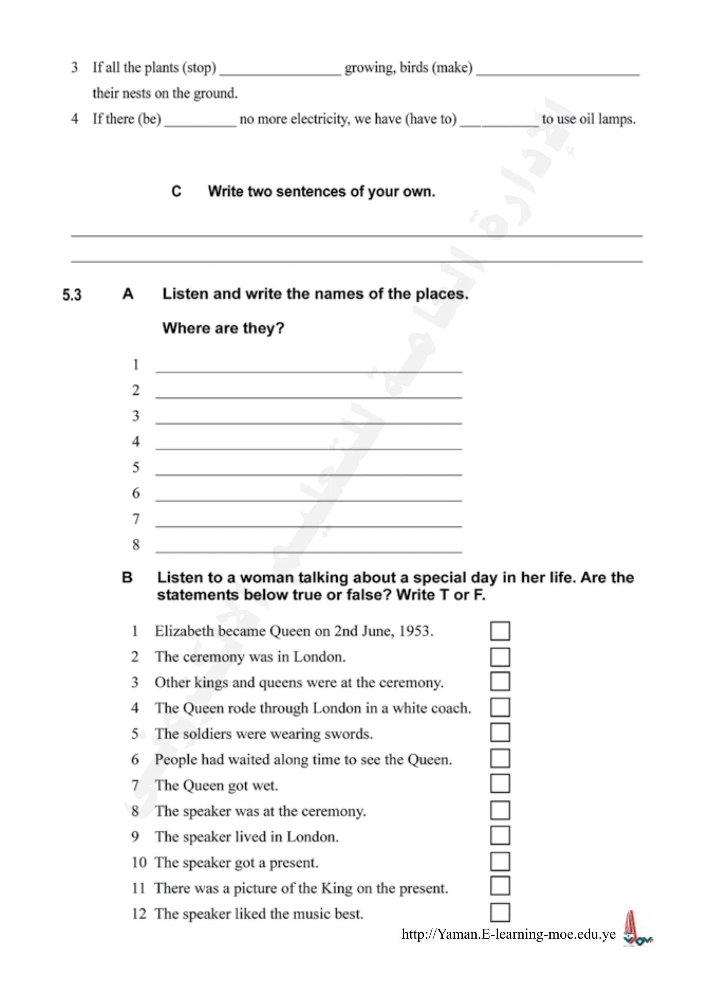

5.3 A Listen and write the names of the places. Where are they? Items 1 to 8: (blank lines for cassette listening comprehension). B Listen to a woman talking about a special day in her life. Are the statements below true or false? Write T or F. 1 Elizabeth became Queen on 2nd June, 1953. [ ] 2 The ceremony was in London. [ ] 3 Other kings and queens were at the ceremony. [ ] 4 The Queen rode through London in a white coach. [ ] 5 The soldiers were wearing swords. [ ] 6 People had waited along time to see the Queen. [ ] 7 The Queen got wet. [ ] 8 The speaker was at the ceremony. [ ] 9 The speaker lived in London. [ ] 10 The speaker got a present. [ ] 11 There was a picture of the King on the present. [ ] 12 The speaker liked the music best. [ ] (WB p. 58) C Listen again and correct the false sentences. D Some answers are not given directly. Listen again carefully and think about the information. Then write short answers to these questions. 1 How long was Elizabeth Queen before she was crowned? 2 What could the Queen hear as she rode through London? 3 How do you know that a lot of people were interested in seeing the Queen ride past? 4 Do you think the speaker got wet? 5 Do you think she saw the ceremony in colour or in black and white? 6 How old is the speaker now? 7 What is the name of the ceremony at which a king or queen is crowned?
along موصولة بدون مسافة (waited along time بدل a long time)، وحُفظت حرفياً.[
{
"num": 1,
"prompt": "1 B #1 'Elizabeth became Queen on 2nd June, 1953' (compare D #1): ______",
"answers": [
"F (she was already Queen before her coronation on 2nd June, 1953)",
"F"
]
},
{
"num": 2,
"prompt": "2 D #5 In 1953 television broadcast the ceremony: ______",
"answers": [
"in black and white",
"black and white"
]
},
{
"num": 3,
"prompt": "3 D #7 Ceremony at which a king or queen is crowned: a ______",
"answers": [
"coronation"
]
}
][
{
"num": 1,
"question": "5.3 A (8 places — inference listening)",
"model_answer": "Requires classroom audio playback; listen for clue sounds, vocabulary and modal inference (e.g., must be / could be in...). Logged in REVIEW_NEEDED.md.",
"explain_ar": "نصوص الشريط في دليل المعلّم فقط؛ لا نخترع الأماكن الثمانية."
},
{
"num": 2,
"question": "5.3 B (#2–12) & C (correct false statements)",
"model_answer": "Verify each printed detail against the audio (London setting, colour of the coach, swords/uniforms, waiting in the rain, speaker watching vs attending, souvenir picture/music). Note D #1 implies Elizabeth became Queen ~16 months before 2 June 1953 (Feb 1952).",
"explain_ar": "استمع إلى التواريخ والألوان وما فعله الناس وأخطاء التذكّر المتعمدة في العبارات."
},
{
"num": 3,
"question": "5.3 D (#1–4, #6) — Reading between the lines",
"model_answer": "Train the skill of inference: combine spoken details from the tape (e.g., speaker's age at the time + current year, crowd applause/cheers, rain outside vs indoors) to infer answers not stated word-for-word.",
"explain_ar": "يمهّد هذا التمرين لمهارة الاستنتاج غير المباشر في درس 5.4 التالي."
}
]{
"wb_ocr_vs_image": "قُورنت صفحتا WB ص 57–58 مع wb-058.png وwb-059.png: صُحّح التعرّف الضوئي على الأرقام ('ra', 'x', 's ay') والمربعات وعبارة D #4 المشوهة ('“a JO YOU...'), وحُفظ الإملاء المطبوع حرفياً في B #6 ('waited along time'); وسُجّل غياب الشريط الصوتي بصدق في REVIEW_NEEDED.md."
}